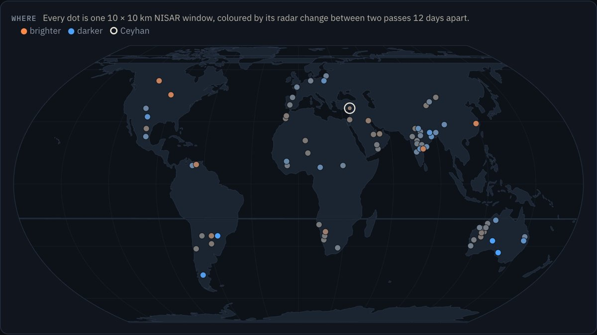
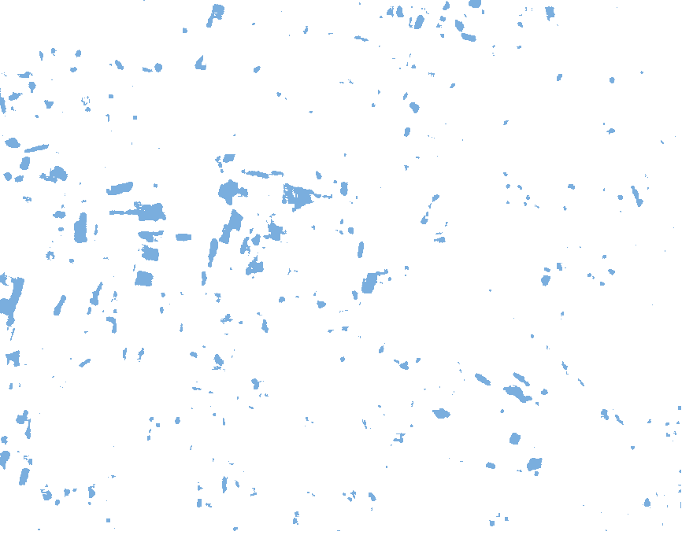
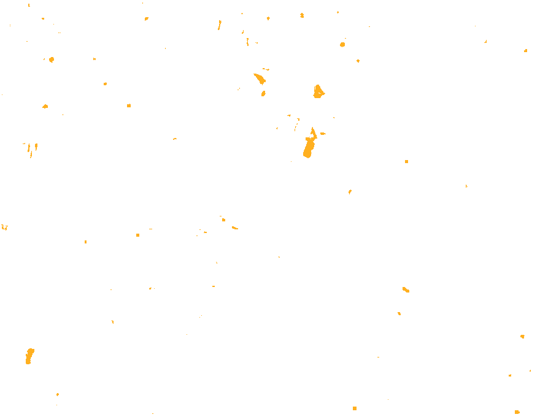

BETWEEN PASSES


NISAR · PASS 1 · 22 OCT 2026
NASA Space Apps 2026 · Dancing with the SARs
Every
12 days.
12 days.
NASA–ISRO's NISAR maps the Earth by radar.
Through cloud. Day and night.
Through cloud. Day and night.

22 OCT
3 NOV
Rain fools
radar.
radar.
A NORMAL CHANGE MAP
636 fields "changed"
Ceyhan, Türkiye · after the first autumn rain
636 fields "changed"
Ceyhan, Türkiye · after the first autumn rain

01The problem, measured · 147 random places
28×
more land looked “changed” where the soil got wetter or drier.
Soil stayed the same
0.18%
Soil got wetter or drier
5.0%


02The filter
NASA SMAP · soil moisture
22 OCT
3 NOV
0.16 → 0.36
m³/m³ · soil got wetter
Wet soil can only
brighten radar.
brighten radar.
Brighter: could be the rain 88%
Darker: something really changed 12%
03The proof
Rules first.
Then the data.
Then the data.
Filter rules
committed before running · 2365a8e
Worldwide test, then repeated
74 + 73 random places · ρ 0.58 / 0.55 · p < 0.001
3 predictions for the next passes
locked 14–15 Nov, before NASA released the data
e3915c1 · a068d8f · scored automatically
e3915c1 · a068d8f · scored automatically
04Expected impact
Fewer false alarms.
FLOOD & DISASTER TEAMS
see real flooding, not wet fields
FARM & FOREST AGENCIES
check real changes first
FARMERS
which fields to visit first
Free · NASA data · anywhere NISAR flies · every 12 days · through cloud

Rain fools radar.
Between Passes shows what really changed.
deniz2077.github.io/between-passes
Team Dusk Orbit · Deniz Efe Bulut · Niğde Local Event, Türkiye
Data: NASA-ISRO NISAR L2 GCOV · NASA SMAP · NASA POWER · NASA HLS · © OpenStreetMap contributors · Natural Earth. Images: real NISAR radar and screens from the working app; no AI-generated imagery. Voice: AI text-to-speech.
The project idea, research question, study area and every key decision are Deniz's. AI (Claude Code) wrote the code, ran the data analysis and drafted the documents, and suggested methods and wording that he reviewed and chose to use.
The project idea, research question, study area and every key decision are Deniz's. AI (Claude Code) wrote the code, ran the data analysis and drafted the documents, and suggested methods and wording that he reviewed and chose to use.